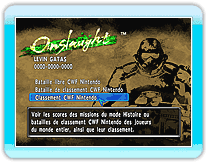
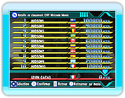

18 |
Classement connexion Wi-Fi Nintendo |
 |
|
Les résultats des missions du mode Histoire et des batailles de classement CWF Nintendo sont enregistrés aux classements CWF Nintendo, ce qui vous permet de rivaliser avec les joueurs du monde entier pour obtenir le meilleur score.
Il y a 3 types de classement : Monde, Région, et Amis. Les classements vous permettent de voir les classement des joueurs du monde entier, mais aussi la position de votre propre score. * Vous devez créer un fichier de sauvegarde pour vous enregistrer au classement connexion Wi-Fi Nintendo.
Lorsque vous sélectionnez "Classement connexion Wi-Fi Nintendo" à partir du menu "Connexion Wi-Fi Nintendo", vos résultats sont
automatiquement enregistrés aux classements CWF Nintendo. * Dans certains cas, il n'est pas possible de mettre à jour les classements CWF Nintendo.

Sélectionnez "Classement connexion Wi-Fi Nintendo" à partir du menu "Connexion Wi-Fi Nintendo" puis
choisissez les paramètres pour les classements que vous désirez consulter. Enfin, sélectionnez "Meilleurs Scores" ou "Score du joueur" pour afficher les classements. * Dans certains cas, il n'est pas possible de mettre à jour les classements CWF Nintendo.
*
|
 |
 |
 |